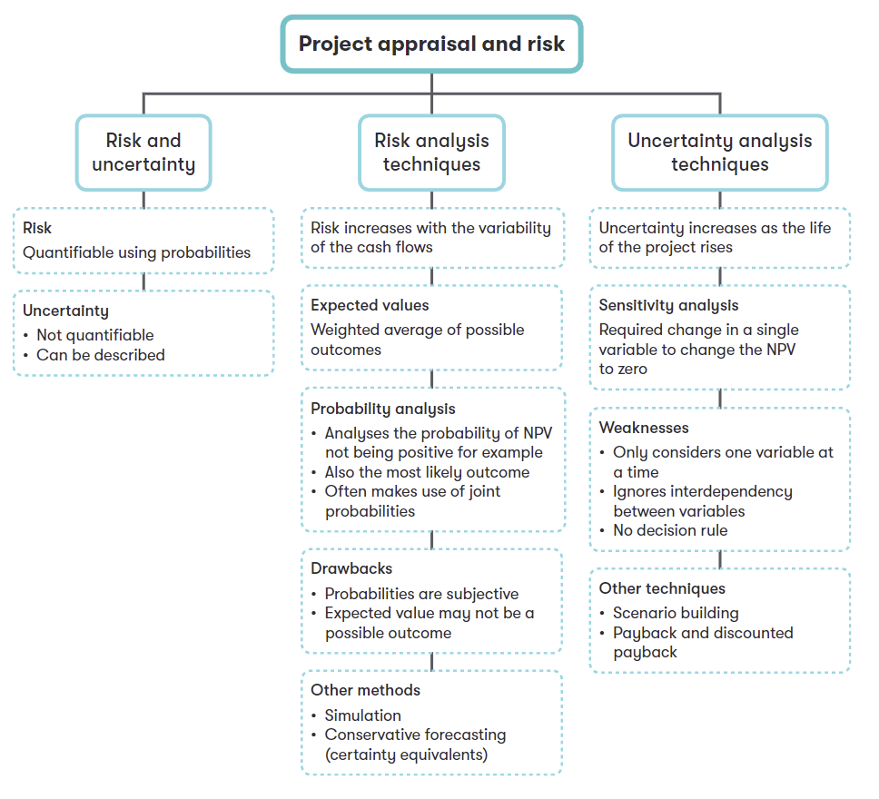

Chapter 7 Project Appraisal under Risk
Syllabus
D. Investment Appraisal
1. Investment Appraisal Techniques
c) Calculate discounted payback and discuss its usefulness as an investment appraisal method^.[2]^
3. Adjusting for Risk and Uncertainty in Investment Appraisal
a) Describe and discuss the difference between risk and uncertainty in relation to probabilities and increasing project life.^[2]^
b) Apply sensitivity analysis to investment projects and discuss the usefulness of sensitivity analysis in assisting investment decisions.^[2]^
- Apply probability analysis to investment projects and discuss the usefulness of probability analysis in assisting investment decisions.^[2]^^[1]^
- Apply and discuss other techniques of adjusting for risk and uncertainty in investment appraisal, including:^[1]^
simulation^[1]^
adjusted payback^[1]^
risk-adjusted discount rates.^[2]^
1 Risk and Uncertainty
The decisions makers must distinguish between risk and uncertainty.
Risk arises where there are several possible outcomes and, based on past relevant experience, probabilities can be assigned to the possible outcomes. Risk increases as the variability of a project’s cash flow increases. Risk can be quantified and built into a project’s NPV.
Uncertainty arises where there are several possible outcomes and no information (experience) upon which to assign probabilities so the degree of uncertainty cannot be quantified. The uncertainty of a project cash flows increases as the project’s life rises, since cash flows in the distant future are less certain than cash flows in the short-term. Uncertainty cannot be quantified but it can be described/analyzed.
2 Uncertainty Analysis
2.1 Sensitivity Analysis
Sensitivity analysis is used to calculate what the value of a single variable would have to change by, to change a project’s NPV to zero. So, it enables an assessment to be made of how responsive the project’s NPV is to changes in a single variable that affects a project’s NPV.
Sensitivity Analysis Has Two Steps:
Step1 calculate the NPV of the project based on estimates.
Step 2 for each element of the decision (cash flows, cost of capital), calculate the change necessary for the NPV to fall to zero.
Sensitivity = \(\frac{NPV}{PV\ of\ relevant\ cash\ flow\ of\ the\ variable}\)
The smaller the percentage, the more sensitive the NPV is to that project variable, as a small change percent would make the project non-viable.
Some Key Sensitivity Ratio:
Sensitivity of sales volume: NPV/PV of contribution.
Sensitivity of price: NPV/PV of revenues
Sensitivity of variable cost: NPV/ PV of variable cost
Sensitivity of fixed cost: NPV/ PV of fixed cost
Sensitivity of initial investment: NPV/PV of initial investment
Sensitivity of cost of capital-先计算IRR；再算IRR相对于目前贴现率的变动百分比
Example 1
An investment of $40,000 in year 0 is expected to give rise to annual contribution of $25,000 and annual fixed cost of $10,000 for each of years 1 to 4; the discount rate is 10%.
Required:
(1) Should we accept or reject the investment based on NPV analysis?
(2) Calculate the sensitivity of your calculation to the following
-initial investment
-contribution
-fixed costs
-discount rate
(c) The annual contribution of $25,000 is based on selling one product, with a sales volume of 10,000 units, selling price of $12.50 and variable costs of $10. Calculate the sensitivity margin for
-the sales volume
-the selling prices
:::
Comments of Sensitivity Analysis
Advantages:
it offers a key method to analyze uncertainty and gives an idea of how sensitive the project is to changes in each of the original estimates.
It prompts management to check the quality of data for the most sensitive variables.
It identifies the critical success factors for the project and directs project management.
Limitations:
Sensitivity analysis is typically used to examine what happens when one variable changes and others remain constant. However, variables are often interdependent.
It assumes data for all other variables is accurate
It does not consider the probability of change in a variable
It does not provide a decision rule. Management must decide the level of sensitivity that is acceptable.
2.2 Discounted Payback Period
The discounted payback period is the length of time it takes the discounted net cash inflows of a project to payback the initial investment.
Discounted payback resolves one of the limitations of payback method: it allows for the time value of money (the usefulness of payback as a measure of risk is limited as it gives equal weighting to cash flows irrespective of when they are received). It also considers more of the project’s cash flows because the amounts are discounted. However, it does not overcome all the limitations of the payback method as it still ignores cash flows after the payback period.
Lecture Example - limitation of payback
Two projects each require an investment of $1,000,000 and have the following forecast cash flows ($000):
| Year | 0 | 1 | 2 | 3 | 4 | 5 |
|---|---|---|---|---|---|---|
| Project A | (1,000) | 600 | 200 | 200 | 205 | 150 |
Project B (1,000) 100 300 600 205 150
Each project has a payback period of 3 years, and on this measure, would be ranked equally in terms of liquidity and risk.
However, project A produces strong cash flows in the early years, which may be less uncertain than later returns. This limitation can be delt with using the discounted payback period.
Example 2 -continued
If the cost of capital of 10% is believed to reflect the risk attached to project A and B in :::
example 2. Calculate the discounted payback period of each project.
Project A
| Year | 0 | 1 | 2 | 3 | 4 | 5 |
|---|---|---|---|---|---|---|
| Cash flow ($) | (1,000) | 600 | 200 | 200 | 205 | 150 |
Discount factor 10%
Present value
Cumulative CF
Discounted payback =
Project B
| Year | 0 | 1 | 2 | 3 | 4 | 5 |
|---|---|---|---|---|---|---|
| Cash flow ($) | (1,000) | 100 | 300 | 600 | 205 | 150 |
Discount factor 10%
Present value
Cumulative CF
Discounted payback=
The discounted payback period produces a longer payback period than non-discounted payback approach.
3 Risk Analysis Techniques
3.1 Probability Analysis
When there are several possible outcomes for a decision and probabilities can be assigned to each, a probability analysis of expected cash flows can be used to measure risk.
Steps of Probability Analysis:
Step 1 calculated an expected value.
An expected value is the weighted arithmetic mean of possible outcomes
Expected Value=\(\sum_{}^{}{P(x).x}\)
Where: x=value of an outcome
P(x)=the probability of outcome x
Step 2 measure risk
A probability distribution of expected cash flows can also be used to measure risk by:
calculating the worst possible outcome and its probability;
calculating the probability that the project will fail to achieve a positive NPV
{.callout-tip} Example 3
A company is considering a project of $300,000 which it estimates will generate cash flows over its two-year life at the probabilities in the following table.
Cash flows for the project (in $000)
Year 1 cash flow probability
100 0.25
200 0.50
300 0.25
Year 2
| Cash flow in year 1 | Cash flow in year 2 | probability |
|---|---|---|
| 100 | 0 | 0.25 |
| 100 | 0.50 | |
| 200 | 0.25 | |
| 200 | 100 | 0.25 |
| 200 | 0.50 | |
| 300 | 0.25 | |
| 300 | 200 | 0.25 |
| 300 | 0.50 | |
| 350 | 0.25 |
The company’s cost of capital is 10%.
Calculate the expected value of the project’s NPV and the probability that the NPV will be negative.
Advantages and Disadvantages of Probability Analysis
Advantage:
- expected values can be discounted to calculate an estimated value of a NPV and to measure risk.
Disadvantages:
the probabilities of possible outcomes may be difficult to estimate
the average may not correspond to any of the possible outcomes
unless the same decision has to be made many times, the average will not be achieved. Therefore, it is not appropriate in “one-off” situation.
3.2 Other Techniques for Managing Risk
1. Simulation
A technique that allows more than one variable to change simultaneously.
An example of simulation is the Monte Carlo simulation method. The output estimates not only a project’s outcomes but also their probabilities.
Stages in a Monte Carlo Simulation:
Specify the major variables and the relationship between the variables (e.g. revenue and costs)
Attach probability distribution to each variable and assign random numbers to reflect the distribution
Simulate the environment by generating random numbers for revenue and costs
Record the outcome of each simulation (e.g. the profit based on the revenue and costs randomly selected)
Repeat the simulation many times to obtain a probability distribution of the possible outcomes (e.g. the probabilities of achieving various profit levels).
Advantages and Limitations of Simulation
Advantages:
It provides more information about the possible outcomes and their relative probabilities.
The data can be used to calculate an expected NPV and the standard deviation of expected NPV.
Limitations:
It is not a technique for making a decision, only for obtaining more information about the possible outcomes.
Simulations are only as good as the probabilities, assumptions and estimates used
It can be very time-consuming without a computer.
It could prove expensive in designing and running the simulation, even on a computer.
2. Risk Adjusted Discount Rate
Using risk-adjusted discount rate for both NPV and adjust payback. A higher discount rate should be applied to higher-risk projects, reducing the influence of more distant cash flows.
4 Summary
